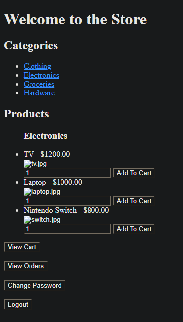
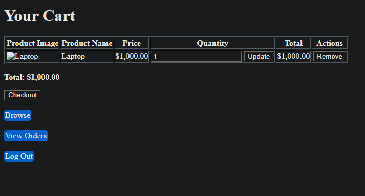

About Me

Hello, my name is Neeve!
I am a 4th year Envrionmental Data Science Major at Michigan Tech, and this is my project portfolio.
I am passionate about nature and the outdoors, which is why I aim to work with it and protect it both in and out of my career.
I am a proud member of the LGBTQ+ community, and I strive to help create around me a safe envrionemnt for all to express themselves freely and feel safe.
Technical Skills:
- HTML
- PHP
- C
- SOLIDWORKS
- Sieman's NX
- Microsoft Office Applications
- AutoCAD
- Java
- MIPS Assembly
- SQL
- ARCGIS
- Intermediate Spanish
Projects
Online Shop (HTML, PHP)
This project was an attempt to make a functional (but not real) online shop through files hosted on a private network and an interconnected database.
The files primarily used PHP and HTML for programming languages, and statements to setup an SQL database were also developed.
The project was a collaboration between Icarus Hickman and myself, as a part of the CS3425 - Introductions To Database Systems final project.
 
Contact
I can be contacted at neevedonnelly@gmail.com